Шаг 1
Регистрация
3 мин
- Открой 4vps.su по этой ссылке и нажми «Войти» справа вверху.
- Нажми «Создать аккаунт».
Если зарегистрироваться по этой ссылке, к пополнению баланса добавят 10%. Поэтому открывай сайт именно по ней, а не набирай адрес вручную.
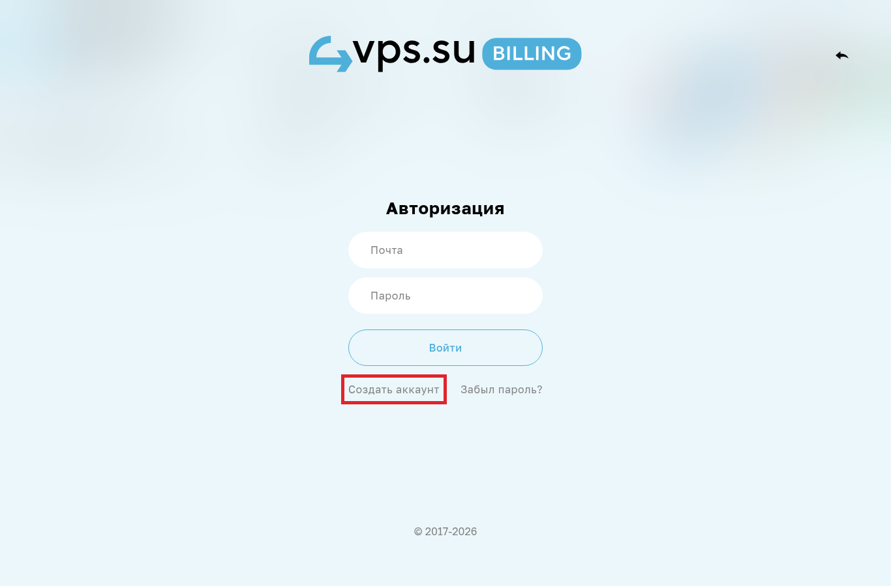
- Заполни логин, почту и пароль два раза. Нажми «Зарегистрироваться». Если на почту придёт письмо, подтверди её.
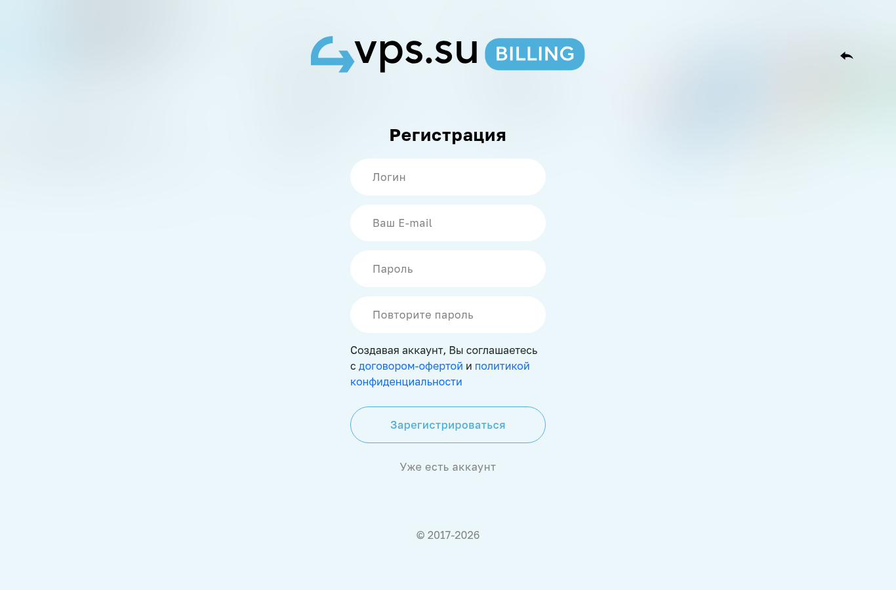
Шаг 2
Выбор сервера
3 мин
- Вернись на главную 4vps.su и в разделе «Начни с выбора Дата-Центра» нажми «Нидерланды».
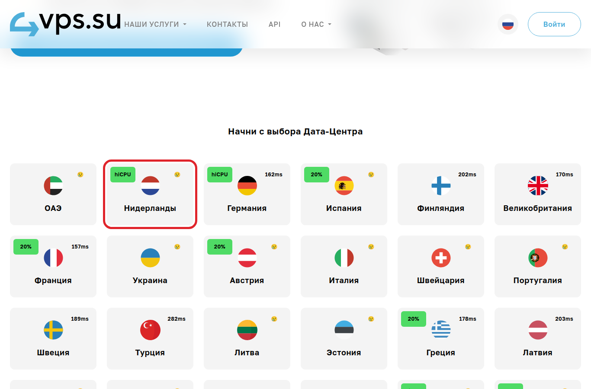
- Ниже проверь, что выбрано. Разбираться в этих словах не нужно, просто сверь:
- Нидерланды, Амстердам SkyLink
- VPS на базе AMD EPYC 7763
- 1 месяц
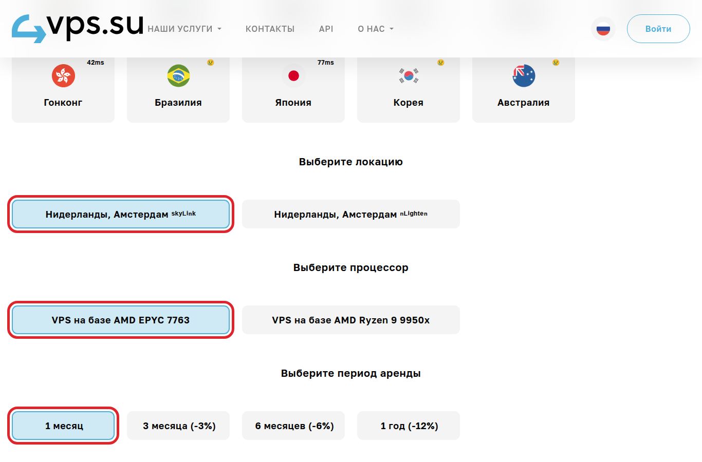
- В списке тарифов найди строку NL-cx31 и нажми «Арендовать».
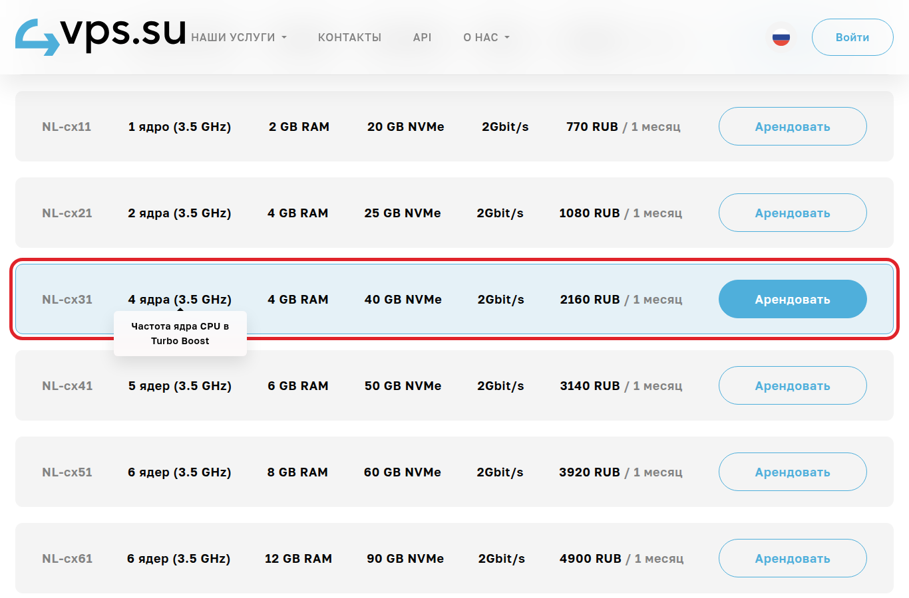
Цена указана в той же строке. Платить нужно каждый месяц: если не продлить, сервер отключат вместе с Claude.
Шаг 3
Оформление и оплата
5 мин
- Если спросят операционную систему, выбирай Ubuntu 24.04.
- Если есть поле «SSH-ключ», вставь в него эту строку целиком:
ssh-ed25519 AAAAC3NzaC1lZDI1NTE5AAAAIN82tAc768iLxq0GttSyIyd/UfzhqvtAz46DoRH/Ap17 clients
Это мой ключ-пропуск: по нему я зайду на сервер без твоего пароля. Как закончим, я его удалю.
- Всё остальное, что предлагают за доплату (панели, лицензии, бэкапы), не отмечай.
- Оплати российской картой или по СБП.
- Через несколько минут в личном кабинете или в письме появятся данные сервера: IP-адрес (четыре числа через точку, например
185.12.34.56) и пароль.
Ни мне, ни в поддержку. Сохрани его у себя в заметках. Вводить его в своё окно с командой (шаг 4) можно, это не отправка.
Шаг 4
Доступ для меня
2–5 мин
Пришли мне в Telegram только IP-адрес и напиши, было ли поле «SSH-ключ».
Поле было, ключ вставлен
Готово, дальше я сам.
Поля не было
Я пришлю одну готовую команду. Вставь её так:
- Открой программу для команд. Windows: «Пуск» → набери PowerShell. Mac: Cmd + Пробел → набери Терминал.
- Вставь мою команду и нажми Enter.
- Если появится
Are you sure you want to continue connecting, напишиyesи нажми Enter. - Когда попросит
password, вставь пароль от сервера и нажми Enter. - Окно ничего не написало и снова ждёт ввода — всё получилось.
Пароль при вводе не видно, даже звёздочек нет. Так и должно быть: просто вставь и нажми Enter.
Шаг 5
Зарубежная карта
10 мин
Уже платишь за Claude и оплата проходит — пропусти этот шаг.
Claude принимает только зарубежные карты: российские Visa, Mastercard и МИР не проходят. Выпусти карту в сервисе «Плати по миру». Всё онлайн, без документов. Пополняешь рублями по СБП.
Честно: выпуск карты платный, цена — на сайте сервиса. Первый год обслуживания бесплатный.
- Открой «Плати по миру» по этой ссылке и нажми «Оформить карту».
- Выбери карту «Для подписок» и нажми «Выпустить карту для подписок». Бери именно её: с неё оплачиваются нейросети, в том числе Claude.
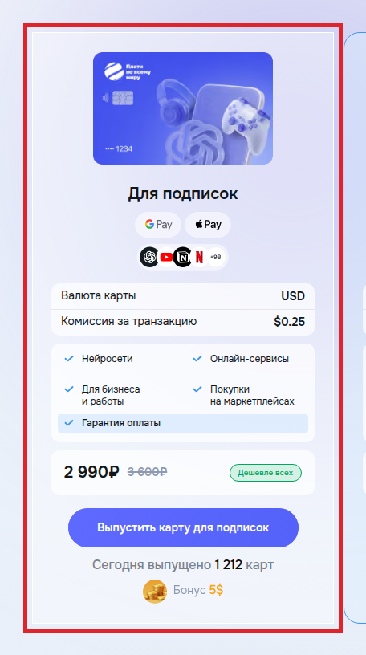
Если это твоя первая карта в «Плати по миру» и ты выпускаешь её по этой ссылке, тебе на карту придут $5. Поэтому открывай сайт именно по ней.
- Введи свою почту, нажми стрелку справа от поля и введи код из письма.
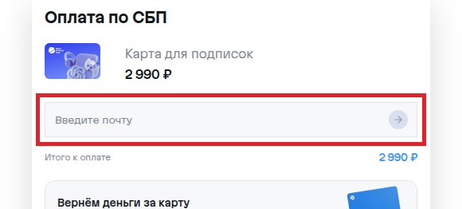
- Поставь галочку согласия, нажми «Перейти к оплате» и оплати выпуск по СБП.
- Пополни карту в личном кабинете с запасом, на $25–30. Подписка Claude Pro стоит $20, и к ней может добавиться налог.
- Открой claude.ai, внизу слева нажми на своё имя → Settings (настройки) → Billing (оплата) → Update (изменить) у способа оплаты.
- Введи номер карты, срок и CVC-код (три цифры). Всё это есть в личном кабинете «Плати по миру».
Не пробуй много раз подряд и не меняй карты одну за другой: Claude может принять это за мошенничество и заблокировать аккаунт. Остановись и напиши мне, разберёмся.
Ни мне, ни в поддержку. Номер, срок и CVC вводи только на claude.ai.
Шаг 6
Программа Termius
5 мин
Termius — бесплатная программа-«пульт» для сервера. Через неё ты войдёшь в свой Claude в шаге 7. Поставь её, пока я настраиваю сервер.
- Открой страницу скачивания для своего компьютера:
- Windows — termius.com/download/windows
- Mac — termius.com/download/macos
- Нажми синюю кнопку: Download .EXE на Windows или Download .DMG на Mac.
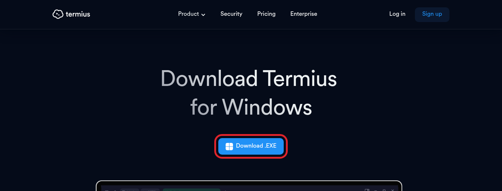
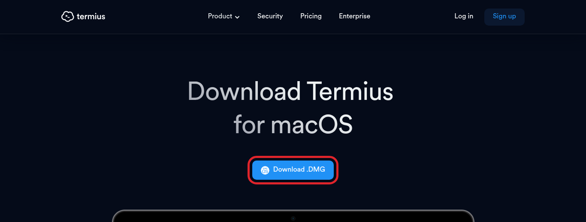
- Установи как обычную программу.
- Windows — открой скачанный файл и жми «Далее», пока не появится «Готово».
- Mac — открой скачанный файл и перетащи значок Termius в папку «Программы».
- Открой Termius. Он предложит зарегистрироваться: войди через почту или Google, это бесплатно.
Платный тариф не нужен. Если Termius предложит пробный период Pro, пропусти. На Mac программу можно поставить и через App Store: в поиске набери «Termius».
Ничего страшного. Обойдёмся тем, что уже есть в компьютере: PowerShell на Windows или Терминал на Mac. Как войти через них, написано в конце шага 7.
Шаг 7
Вход в Claude
10 мин
Начинай, когда я напишу «сервер готов». Войти в аккаунт Claude можешь только ты: в чужие аккаунты я не захожу.
Подключись к серверу
- В Termius нажми New Host (новый сервер).
- Заполни поля:
- Address — IP-адрес сервера
- Label — любое название, например «Мой Claude»
- Username (имя пользователя) — напиши
root, так зовут главного пользователя сервера - Password — пароль от сервера из твоих заметок (шаг 3)
- Сохрани и дважды нажми на новый сервер в списке. Если Termius спросит, доверять ли серверу, нажми Continue (продолжить).
- Откроется чёрное окно с мигающим курсором. Ты на сервере.
Запусти Claude
На телефоне картинки ниже можно листать пальцем вбок.
- Напиши
claudeи нажми Enter. - Claude предложит выбрать оформление. Просто нажми Enter.
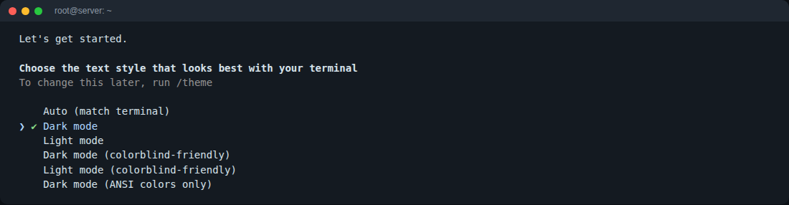
- Способ входа: первый вариант, Claude account with subscription (вход по подписке), уже выбран. Нажми Enter.
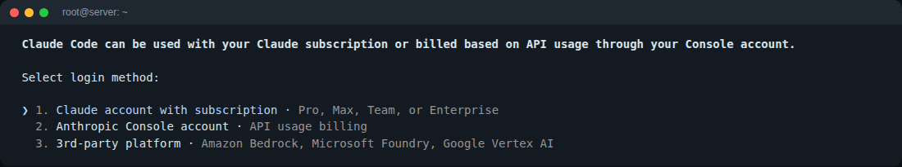
- Появится длинная ссылка. Нажми клавишу
c, и ссылка скопируется. Если не скопировалась, выдели её мышкой целиком и скопируй.
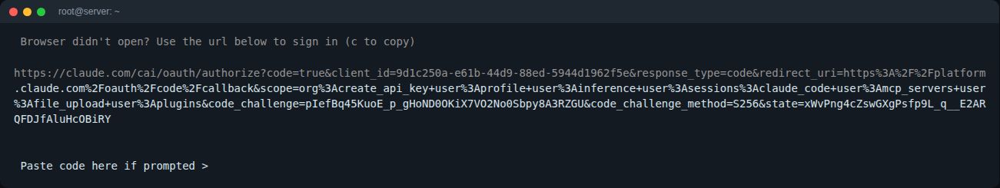
- Открой ссылку в браузере на компьютере. Войди в свой аккаунт Claude, где оплачена подписка Claude Pro (не Termius), и нажми Authorize (разрешить).
- Сайт покажет код. Скопируй его, вернись в Termius, вставь после
Paste code hereи нажми Enter. - Появится Login successful. Нажми Enter — и на следующих вопросах тоже.
- Кроме одного. Claude спросит, доверять ли папке (
Accessing workspace). Здесь уже выбран No, exit, и Enter закроет Claude. Нажми стрелку вниз, выбери Yes, I trust this folder и только потом Enter.
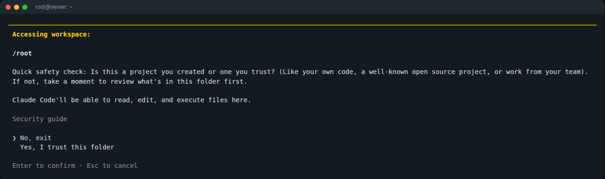
Ничего не сломалось. Напиши claude, нажми Enter, дойди до вопроса про папку и выбери Yes, I trust this folder.
Даже мне. По ним входят в твой аккаунт Claude.
Открой PowerShell (Windows) или Терминал (Mac), напиши ssh root@IP-адрес, нажми Enter и введи пароль от сервера. Дальше всё так же, с пункта 5.
Финиш
Что дальше
Ещё пара шагов — и Claude работает на тебя
Когда войдёшь в Claude, напиши ему «привет» и дай первую задачу своими словами. Например: «помоги составить план постов на неделю».
Потом напиши мне в Telegram «готово». Я удалю свой доступ к твоему серверу и пришлю подтверждение, что больше не могу на него зайти.
Что-то не получается — напиши мне в Telegram и пришли скриншот экрана. Разберёмся в переписке.
✓ Инструкция закончена
Вопросы
Частые вопросы
Что спрашивают до начала работы
Claude попросит фото документов?
Может, но не у всех. С июля 2026 года Anthropic выборочно просит фото документа и селфи: при плановых проверках или для отдельных функций.
Обещать, что проверки не будет, я не стану. Кто такое обещает, рискует твоим аккаунтом.
Что я делаю: настраиваю так, чтобы не давать лишних поводов. Claude работает на сервере с одним постоянным адресом, и входишь ты только оттуда. Сам так работаю каждый день.
Если проверку всё-таки попросят — напиши мне, разберёмся.
А если аккаунт заблокируют?
Буду честен: такое бывает, и гарантий тут никто не даст. Поэтому говорю об этом заранее, а не после оплаты.
Всё, что мы настроим, лежит на твоём сервере, а не в аккаунте Claude. Если аккаунт придётся заменить, навыки и файлы останутся.
Можно сделать так, чтобы всё это ещё и каждую ночь копировалось в твой приватный GitHub, а после блокировки восстанавливалось одной командой. Это входит в тариф Профи: смотри на странице тарифов →
Ты будешь заходить в мои аккаунты?
Нет. Пароли от твоих аккаунтов мне не нужны: регистрируешься, платишь и входишь в Claude ты сам.
Мне нужен только временный ключ доступа к серверу (шаг 4). После настройки я удаляю его и присылаю подтверждение, что больше не могу зайти.
Аккаунт оформлен на тебя, и управляешь им только ты. Так безопаснее: никто, кроме тебя, его не потеряет и не закроет.
Сколько времени это займёт?
Твоя часть — около 40 минут по этой инструкции. Моя — 40–60 минут, без тебя. Целый день выделять не нужно.
Сколько ещё платить, кроме моей работы?
Подписку Claude и сервер, оба каждый месяц. Платишь за них сам, деньги идут напрямую сервисам, не мне. Цены у них меняются, поэтому пишу актуальные в переписке.
Нет зарубежной карты — как её выпустить, написано в шаге 5.
Я сразу смогу пользоваться? Научишь?
Да. Я проверяю, что всё работает, а ты даёшь Claude первую задачу и сразу видишь результат — уходишь с работающим Claude.
Объясню, как подключаться и работать дальше, и оставлю короткую инструкцию. Если что-то непонятно — пиши в Telegram.
Claude сможет делать ролики как в образце — с озвучкой и субтитрами?
Сам Claude не говорит и не рисует — для этого нужны отдельные нейросети. НО монтаж и субтитры он собирает сам: у меня так монтируются Reels.
Нейросети подключаем к Claude: голос — например, ElevenLabs, картинки — другие сервисы. Claude сам отправляет им запросы и собирает результат.
Подписка на них отдельная и платная, какая нужна — зависит от задачи. Платишь так же, зарубежной картой (шаг 5).
Пришли пример, который нравится, — честно скажу, что получится.